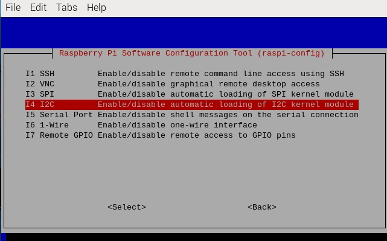

Configuración de I2C
Paso 1: Habilita el puerto I2C de tu Raspberry Pi (Si ya lo has habilitado, omite este paso; si no sabes si lo has hecho o no, por favor continúa).
sudo raspi-config
3 Opciones de Interfaz

I4 I2C
<Sí>, luego <Ok> -> <Finalizar>

Paso 2: Verifica si los módulos i2c están cargados y activos.
lsmod | grep i2c
A continuación, aparecerán los siguientes códigos (el número puede ser diferente), si no aparece, reinicia la Raspberry Pi con sudo reboot.
i2c_dev 6276 0
i2c_bcm2708 4121 0
Paso 3: Instala i2c-tools.
sudo apt-get install i2c-tools
Paso 4: Verifica la dirección del dispositivo I2C.
i2cdetect -y 1 # Para Raspberry Pi 2 y versiones superiores
i2cdetect -y 0 # Para Raspberry Pi 1
pi@raspberrypi ~ $ i2cdetect -y 1
0 1 2 3 4 5 6 7 8 9 a b c d e f
00: -- -- -- -- -- -- -- -- -- -- -- -- --
10: -- -- -- -- -- -- -- -- -- -- -- -- -- -- -- --
20: -- -- -- -- -- -- -- -- -- -- -- -- -- -- -- --
30: -- -- -- -- -- -- -- -- -- -- -- -- -- -- -- --
40: -- -- -- -- -- -- -- -- 48 -- -- -- -- -- -- --
50: -- -- -- -- -- -- -- -- -- -- -- -- -- -- -- --
60: -- -- -- -- -- -- -- -- -- -- -- -- -- -- -- --
70: -- -- -- -- -- -- -- --
Si hay un dispositivo I2C conectado, se mostrará la dirección del dispositivo.
Paso 5:
Para usuarios de lenguaje C: Instala libi2c-dev.
sudo apt-get install libi2c-dev
Para usuarios de Python:
Activar el entorno virtual.
Nota
Antes de la activación, necesitas asegurarte de que has creado un entorno virtual, por favor consulta: Creación de un Entorno Virtual.
Cada vez que reinicies la Raspberry Pi, o abras un nuevo terminal, deberás ejecutar el siguiente comando nuevamente para activar el entorno virtual.
source myenv/bin/activate
Una vez activado el entorno virtual, verás el nombre del entorno antes del símbolo del sistema, lo que indica que estás trabajando dentro del entorno virtual.
Instala smbus para I2C.
sudo pip3 install smbus2
Salir del entorno virtual.
Cuando hayas terminado tu trabajo y desees salir del entorno virtual, simplemente ejecuta:
deactivate
Esto te devolverá al entorno global de Python del sistema.